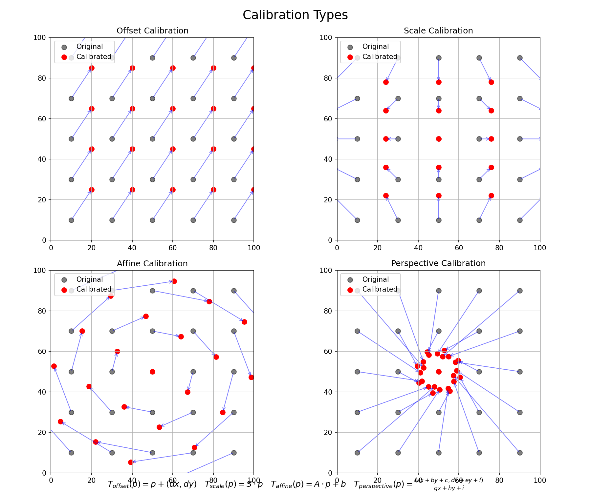
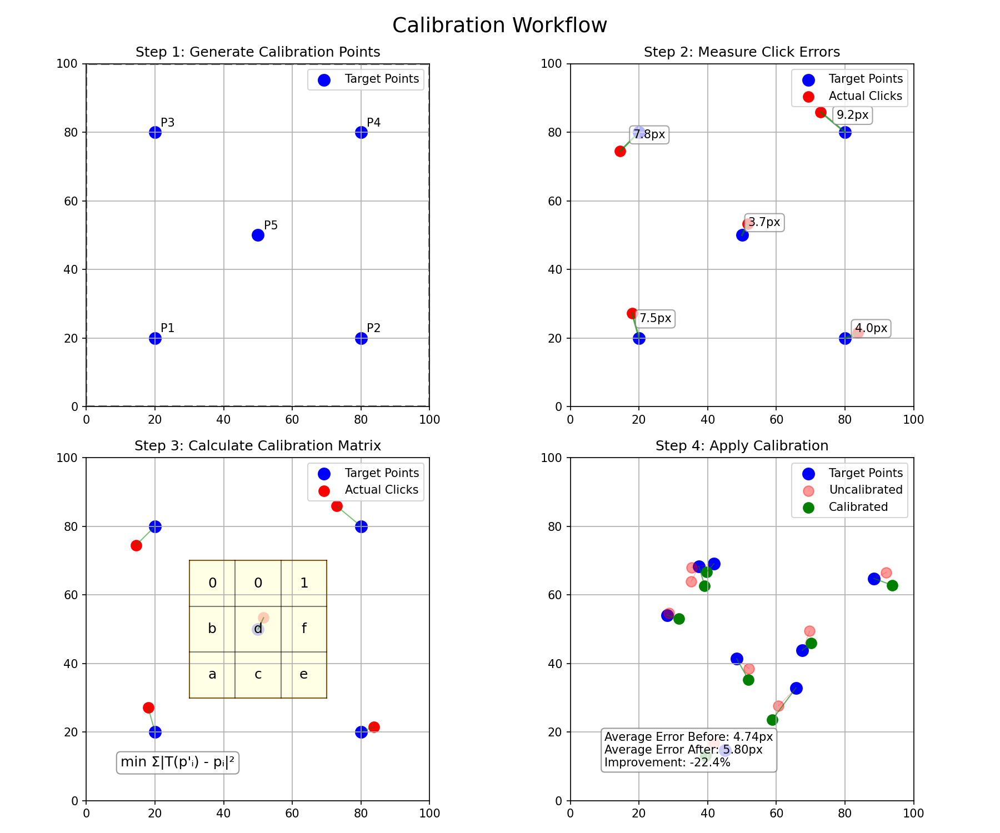
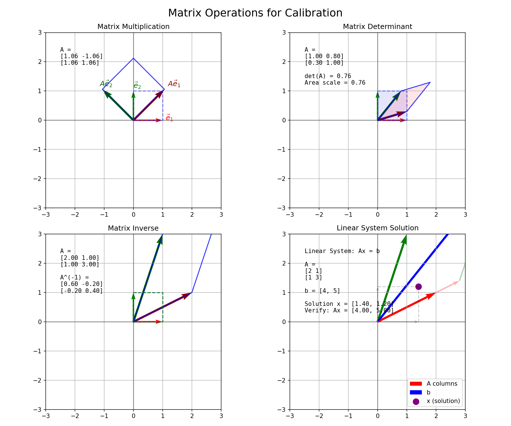
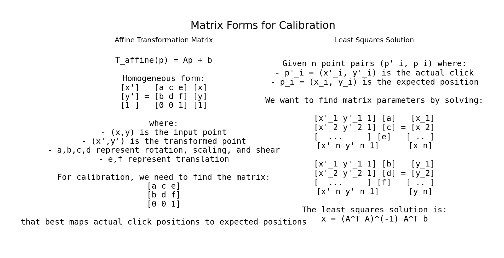

<!DOCTYPE html>
<html>
<head>
  <title>BrowserCoordinateKit Calibration Visualizations</title>
  <style>
    body { font-family: Arial, sans-serif; margin: 20px; }
    .card { border: 1px solid #ccc; margin: 20px 0; padding: 15px; border-radius: 5px; }
    .visualization { text-align: center; margin: 15px 0; }
    img { max-width: 100%; border: 1px solid #eee; }
    .nav { margin: 20px 0; }
    .nav a { margin-right: 15px; text-decoration: none; }
    .equation { margin: 10px 0; padding: 10px; background-color: #f5f5f5; border-radius: 5px; }
    pre { background-color: #f8f8f8; padding: 10px; border-radius: 5px; font-family: monospace; }
  </style>
  <script src="https://polyfill.io/v3/polyfill.min.js?features=es6"></script>
  <script id="MathJax-script" async src="https://cdn.jsdelivr.net/npm/mathjax@3/es5/tex-mml-chtml.js"></script>
</head>
<body>
  <h1>BrowserCoordinateKit Calibration System</h1>
  <p>This page contains visualizations of the calibration system in BrowserCoordinateKit.</p>
  
  <div class="nav">
    <a href="../index.html">Mathematical Overview</a>
    <a href="../validation/validation.html">Symbolic Validations</a>
    <a href="../visualizations/index.html">Coordinate Transformations</a>
  </div>
  
  <div class="card">
    <h2>Calibration Types</h2>
    <p>The BrowserCoordinateKit library supports different types of calibrations to correct positional errors:</p>
    <ul>
      <li><strong>Offset Calibration</strong>: Adds a constant offset to coordinates (translation)</li>
      <li><strong>Scale Calibration</strong>: Multiplies coordinates by scaling factors</li>
      <li><strong>Affine Calibration</strong>: Applies a linear transformation with translation</li>
      <li><strong>Perspective Calibration</strong>: Applies a projective transformation</li>
    </ul>
    
    <div class="equation">
      <p>Mathematical formulations:</p>
      <p><strong>Offset:</strong> \(T_{offset}(p) = p + (dx, dy)\)</p>
      <p><strong>Scale:</strong> \(T_{scale}(p) = (s_x \cdot x + dx, s_y \cdot y + dy)\)</p>
      <p><strong>Affine:</strong> \(T_{affine}(p) = A \cdot p + b\) where A is a 2×2 matrix and b is a translation vector</p>
      <p><strong>Perspective:</strong> \(T_{perspective}(p) = rac{(ax + by + c, dx + ey + f)}{gx + hy + i}\)</p>
    </div>
    
    <div class="visualization">
      
    </div>
  </div>
  
  <div class="card">
    <h2>Calibration Workflow</h2>
    <p>The calibration process involves several steps:</p>
    <ol>
      <li>Generate calibration points across the screen</li>
      <li>User clicks on each target point</li>
      <li>Measure the error between expected and actual positions</li>
      <li>Calculate calibration parameters using least squares method</li>
      <li>Apply calibration to correct subsequent interactions</li>
    </ol>
    
    <div class="equation">
      <p>For affine calibration, we solve the system:</p>
      <p>\(
      egin{pmatrix}
      x_1' & y_1' & 1 \
      x_2' & y_2' & 1 \
      dots & dots & dots \
      x_n' & y_n' & 1
      \end{pmatrix}
      egin{pmatrix}
      a \ c \ e
      \end{pmatrix}
      =
      egin{pmatrix}
      x_1 \ x_2 \ dots \ x_n
      \end{pmatrix}
      \)</p>
      
      <p>\(
      egin{pmatrix}
      x_1' & y_1' & 1 \
      x_2' & y_2' & 1 \
      dots & dots & dots \
      x_n' & y_n' & 1
      \end{pmatrix}
      egin{pmatrix}
      b \ d \ f
      \end{pmatrix}
      =
      egin{pmatrix}
      y_1 \ y_2 \ dots \ y_n
      \end{pmatrix}
      \)</p>
      
      <p>Where \((x_i', y_i')\) are the actual click positions and \((x_i, y_i)\) are the expected positions.</p>
    </div>
    
    <div class="visualization">
      
    </div>
  </div>
  
  <div class="card">
    <h2>Matrix Operations</h2>
    <p>The calibration system relies on several matrix operations:</p>
    <ul>
      <li><strong>Matrix Multiplication</strong>: Used to apply transformations</li>
      <li><strong>Matrix Determinant</strong>: Used to check if a matrix is invertible</li>
      <li><strong>Matrix Inverse</strong>: Used to solve linear systems</li>
      <li><strong>Linear System Solution</strong>: Used to find calibration parameters</li>
    </ul>
    
    <div class="equation">
      <p>Implementation of these operations in TypeScript:</p>
      <pre>
/**
 * Matrix multiplication
 */
private multiply(A: number[][], B: number[][]): number[][] {
  const rowsA = A.length;
  const colsA = A[0].length;
  const rowsB = B.length;
  const colsB = B[0].length;
  
  if (colsA !== rowsB) {
    throw new Error('Invalid matrix dimensions for multiplication');
  }
  
  const result: number[][] = [];
  
  for (let i = 0; i < rowsA; i++) {
    result[i] = [];
    for (let j = 0; j < colsB; j++) {
      let sum = 0;
      for (let k = 0; k < colsA; k++) {
        sum += A[i][k] * B[k][j];
      }
      result[i][j] = sum;
    }
  }
  
  return result;
}

/**
 * Determinant for 3x3 matrix
 */
private determinant(A: number[][]): number {
  return (
    A[0][0] * (A[1][1] * A[2][2] - A[1][2] * A[2][1]) -
    A[0][1] * (A[1][0] * A[2][2] - A[1][2] * A[2][0]) +
    A[0][2] * (A[1][0] * A[2][1] - A[1][1] * A[2][0])
  );
}
      </pre>
    </div>
    
    <div class="visualization">
      
    </div>
  </div>
  
  <div class="card">
    <h2>Matrix Forms for Calibration</h2>
    <p>The calibration system uses different matrix forms to represent transformations and solve for calibration parameters.</p>
    
    <div class="visualization">
      
    </div>
  </div>
  
  <div class="footer">
    <p>These visualizations were generated using Python's matplotlib library to demonstrate the calibration system implemented in BrowserCoordinateKit.</p>
  </div>
</body>
</html>
